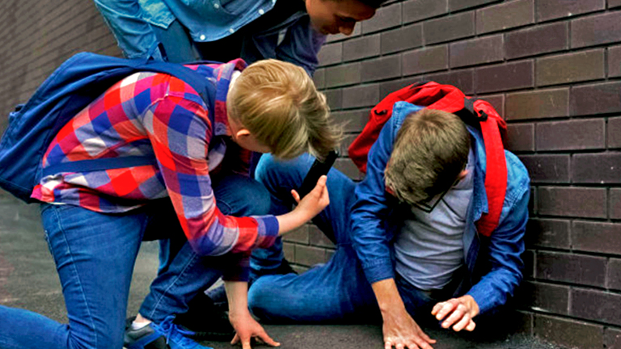

Rispetto al bullismo tradizionale che si verifica nella vita reale, il cyberbullismo si realizza su internet talvolta causando danni violenti. Difficile reperibilità: se il cyberbullismo avviene via SMS, messaggistica istantanea o mail, o in un forum online privato, ad esempio, è più difficile reperirlo e rimediarvi. Indebolimento delle remore etiche: le due caratteristiche precedenti, abbinate con la possibilità di essere "un'altra persona" online, possono indebolire le remore etiche: spesso la gente fa e scrive online cose che non farebbe o direbbe nella vita reale. Assenza di limiti spazio temporali: mentre il bullismo tradizionale avviene di solito in luoghi e momenti specifici (ad esempio in contesto scolastico), il cyberbullismo investe la vittima ogni volta che si collega al mezzo elettronico utilizzato dal cyberbullo Come nel bullismo tradizionale, però, il prevaricatore vuole prendere di mira chi è ritenuto "diverso", solitamente per aspetto estetico, e mentale, timidezza, orientamento sessuale o politico, abbigliamento ritenuto non convenzionale e così via[5]. Gli esiti di tali molestie sono, com'è possibile immaginarsi a fronte di tale stigma, l'erosione di qualsivoglia volontà di aggregazione e il conseguente isolamento, implicando esso a sua volta danni psicologici ne analiticamente indifferenti, come la depressione o, nei casi peggiori, ideazioni e intenzioni suicidarie. Spesso i molestatori, soprattutto se giovani, non si rendono effettivamente conto di quanto ciò possa nuocere all'altrui persona. 